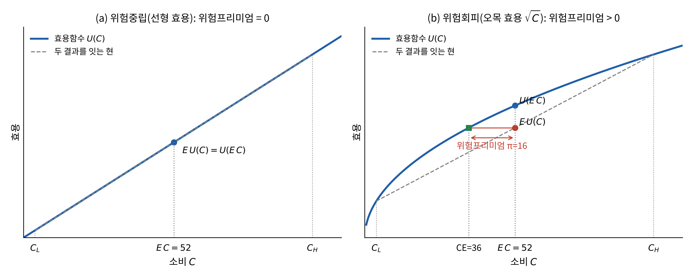
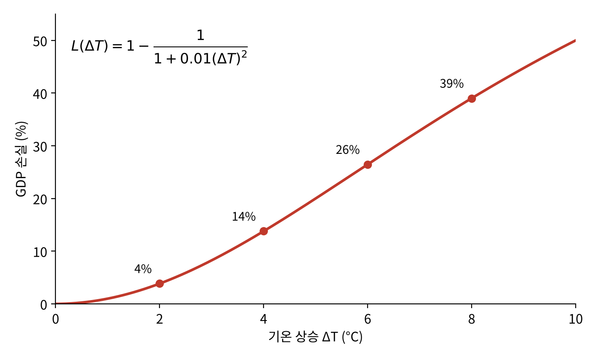
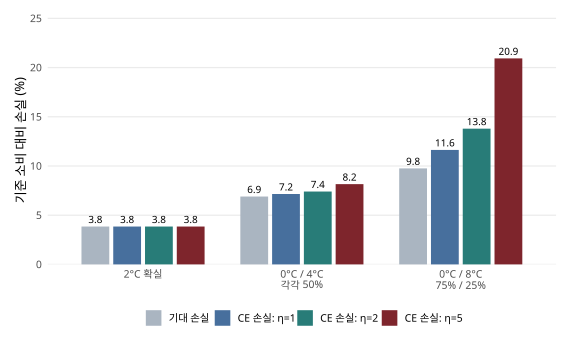
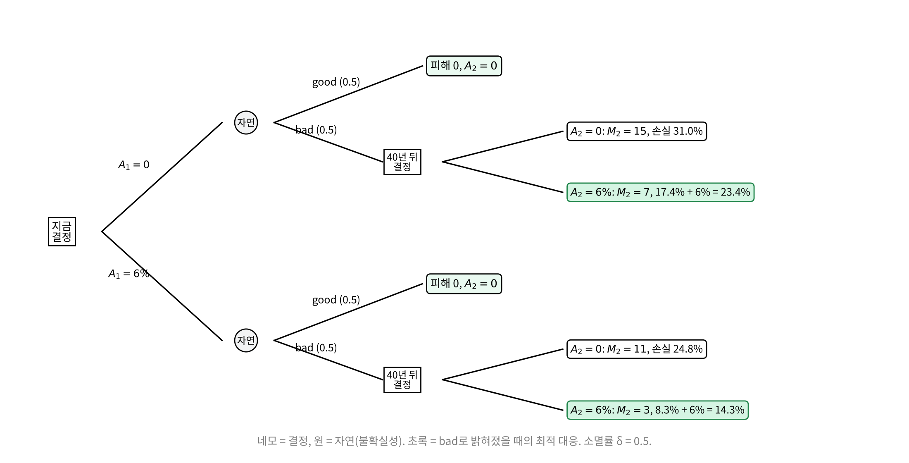
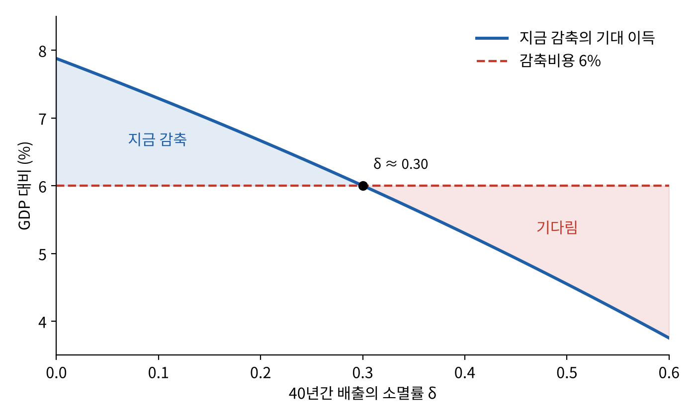

9 불확실성·위험과 기후정책
들어가며: 모르는데, 왜 지금 돈을 써야 하나?
7장의 비용-편익 분석은 피해 \(D\)와 감축비용을 안다고 가정했다. 그러나 기후변화의 피해가 얼마나 클지는 아무도 정확히 모른다. 그래서 흔히 이런 반론이 나온다. “잘 모르니 더 알게 될 때까지 기다리자.”
핀딕(Robert Pindyck)은 정반대로 답한다. 불확실성은 행동을 미룰 이유가 아니라, 오히려 보험으로서 지금 행동할 이유라는 것이다 (Pindyck 2022년).
집주인의 화재보험을 생각해 보자. 앞으로 몇 년 안에 집에 불이 날지, 나면 피해가 얼마일지 모른다. 그렇다고 “일단 기다려 보자”며 보험을 들지 않는 집주인은 없다. 사건이 일어날 확률이 작아도, 일어나면 감당할 수 없는 손실이라면 기꺼이 보험료를 낸다.
이 장의 질문은 다음과 같다. 불확실성은 기후정책을 더 강하게 만드는가, 더 약하게 만드는가? 그리고 그 이유는 무엇인가?
| 절 | 내용 |
|---|---|
| I. 불확실성의 원천 | 무엇을 모르는가, 모형은 그것을 어떻게 다루는가 |
| II. 기대효용과 위험프리미엄 | 위험을 평가하는 도구(7장 램지 공식의 \(\eta\)가 다시 등장) |
| III. 기후보험의 가치 | 볼록성과 위험회피, 두 경로의 보험가치 |
| IV. 비가역성과 옵션가치 | 줄일까, 기다릴까? |
| 부록 | 이론으로 다시 보기: 젠센 부등식과 다섯 개의 명제 |
불확실성의 원천
무엇이 불확실한가
Tol의 표현을 빌리면, 기후변화에 관심을 가지려면 먼 미래, 먼 나라, 그리고 작은 확률을 신경 써야 한다. 7장이 먼 미래(할인)를 다루었다면 이 장은 작은 확률을 다룬다.
배출에서 피해의 화폐가치에 이르는 과정은 하나의 사슬로 볼 수 있으며, 각 고리마다 불확실성이 있다.
배출(성장·기술) → 기후변화(기후민감도) → 취약성(적응) → 영향(피해함수) → 영향의 가치(화폐가치화)
화폐가치로 바꾼 영향을 더할 때는 여러 세계의 상태, 즉 가능하지만 불확실한 여러 미래에 걸쳐 더해야 한다. 그래서 불확실성을 피할 수 없다.
핀딕은 불확실성의 크기가 이 사슬을 따라 커진다고 진단한다.
- 배출과 농도: 불확실하지만 범위를 어느 정도 제한할 수 있다.
- 기후민감도: 온건한 결과와 심각한 결과가 3배 이상 차이 난다(1장의 평형기후민감도, ECS).
- 피해: 이론도 데이터도 거의 없어 사실상 추측에 가깝다(5장, 10장의 IAM 비판).
같은 배출 경로에서도 기온 반응은 하나로 정해지지 않고, 같은 기온에서도 피해는 인구의 위치, 경제구조, 적응과 생태계 반응에 따라 달라진다. 미래의 정책과 기술, 국제협력도 배출과 피해를 바꾼다.
기후는 SO₂ 문제와 왜 다른가
8장에서 본 석탄발전소의 SO₂ 규제와 비교해 보자.
| 석탄발전소의 SO₂ 규제 | 기후변화 | |
|---|---|---|
| 비용 | 탈황설비, 저유황탄 → 전기요금 상승 | 에너지 전환 비용 |
| 편익 | 호흡기 질환·산성비 감소 | 먼 미래, 전 지구의 피해 감소 |
| 불확실성 | 있지만 성격과 크기를 잘 안다 | 파국적 결과의 가능성 자체에 대해 의견이 갈린다 |
| 평가의 틀 | 표준 비용-편익 분석으로 방어 가능한 결론 | 할인율을 포함한 평가 틀에도 합의가 없다 |
기후변화에는 불확실성의 크기에 대한 불확실성까지 있다. 그래서 기후정책에는 표준적인 비용-편익 분석이 잘 들어맞지 않는다. 불확실성은 특히 파국적 결과에서 문제가 된다.
모형은 불확실성을 어떻게 다루나
경제학자들은 크게 세 가지 방법으로 불확실성을 모형에 넣는다.
- 몬테카를로 시뮬레이션: 모수(예: 피해함수의 계수)에 확률분포를 부여하고, 그 분포에서 표본을 뽑아 모형을 수만~수십만 번 돌려 결과의 분포를 얻는다(Nordhaus, 2018). 여러 입력 사이의 상관관계도 지정해야 한다.
- 확률과정을 모형 안에 넣기: 경제성장 같은 변수를 확률적으로 움직이게 하여 SCC 자체가 확률변수가 되게 한다(Cai and Lontzek, 2019).
- 최선·최악 시나리오: 그럴듯한 범위에서 가장 유리한 모수와 가장 불리한 모수로 결과의 폭을 본다(Hassler, Krusell and Olovsson, 2018).
핀딕은 이 방법들의 한계를 날카롭게 지적한다. 모르는 것을 시뮬레이션한다고 알게 되지는 않는다. 몬테카를로에 쓰이는 확률분포는 모형 개발자가 고른 것이다. 평균과 분산이 같은 세 분포(감마, 프레셰, Roe-Baker 분포)도 기온 상승을 피하기 위한 지불의사를 전혀 다르게 만든다. 피해함수의 형태(역이차인지 역삼차인지)까지 모르면 더 그렇다. 핀딕의 말을 빌리면, A가 B에 어떻게 영향을 주는지 모르면서 A와 B의 모형을 만들어 돌려 본들 그 무지가 메워지지는 않는다 (Pindyck 2013년).
그래도 시나리오 방식은 결과의 폭을 보여주므로, 뒤에서 볼 보험가치와 비가역성을 평가하는 데 쓸모가 있다. 확률을 억지로 붙이지 않고 여러 일관된 미래에서 정책이 어떻게 작동하는지 비교하는 시나리오 분석, 특정 가정이 바뀌면 결과가 얼마나 바뀌는지 보는 민감도 분석도 같은 이유로 중요하다. 어떤 방법을 쓰든 모형이 반영한 불확실성과 생략한 불확실성을 함께 밝혀야 한다.
기대효용과 위험프리미엄
불확실성 속의 선택을 분석하려면 위험을 평가하는 도구가 필요하다. 미시경제학의 기대효용 이론을 간단히 복습하자.
동전 던지기 내기
동전을 던져 앞면이 나오면 100달러를 받고, 뒷면이 나오면 아무것도 받지 못하는 내기를 생각하자. 받는 금액 \(R\)은 확률변수로, \(\Pr(R=0)=\tfrac12\), \(\Pr(R=100)=\tfrac12\)이다. 기댓값은 \(E(R)=50\)달러다.
질문: 이 내기의 가치는 “확실한 50달러”와 같은가?
대부분의 사람은 아니라고 답한다. 확실한 50달러를 더 좋아한다. 이를 설명하는 것이 기대효용이다.
기대효용의 계산
내기와 무관한 다른 소비(부)를 \(C=1{,}000\)달러, 효용함수를 \(U(C)=\ln C\)라 하자. 내기의 기대효용은 각 결과의 효용을 확률로 가중해 더한 것이다.
\[ E\,U(C+R)=\sum_{i=1}^{2}p_i\,U(C+R_i) =\tfrac12\ln1000+\tfrac12\ln1100 =3.454+3.502=6.955 \]
반면 기댓값 50달러를 확실하게 받을 때의 효용은 \(U(1050)=\ln1050=6.957\)이다. 따라서
\[ E\,U(C+R)=6.955\;<\;6.957=U(C+E\,R) \]
이다. 일반적으로 확률변수의 기대효용은 확률변수 기댓값의 효용보다 작다. 효용함수가 오목(concave)하기 때문, 즉 사람들이 위험회피적이기 때문이다. 오목한 효용함수는 한계효용이 체감한다는 뜻이다. 100달러를 더 받는 기쁨보다 100달러를 잃는 슬픔이 더 크다.
확실성등가와 위험프리미엄
위험한 내기와 무차별하게 만드는 확실한 금액을 확실성등가(certainty equivalent, CE)라 한다.
\[ E\,U(C+R)=U(C+\mathrm{CE}) \]
위 예에서 \(E\,U(C+R)=6.955=\ln1049\)이므로 \(\mathrm{CE}\approx49\)달러다. 이 사람은 “0달러 또는 100달러를 반반의 확률로 주는 내기”와 “확실한 49달러”를 똑같이 여긴다.
내기의 기댓값과 확실성등가의 차이를 위험프리미엄(risk premium, \(\pi\))이라 한다.
\[ \pi=E\,R-\mathrm{CE}\qquad\text{또는 동등하게}\qquad E\,U(C+R)=U(C+E\,R-\pi) \]
위 예에서 \(\pi=50-49=1\)달러다. 위험프리미엄은 위험을 없애기 위해 기꺼이 포기할 금액, 즉 보험료의 상한이다. 기후정책을 “보험”으로 읽는 출발점이 바로 이것이다.

기후 피해에 적용하면: 기대피해와 확실성등가 피해
기후변화의 피해 \(D\)가 불확실하다면, 먼저 떠올릴 수 있는 것은 기대피해다.
\[ E(D)=\sum_s p_s D_s\qquad\text{또는}\qquad E(D)=\int D\,f(D)\,dD \]
여기서 \(p_s\)는 세계의 상태 \(s\)가 일어날 확률, \(f(D)\)는 피해의 확률밀도다. 그런데 기대피해만 보면 두 가지를 놓친다.
- 피해함수가 볼록하면, “가장 그럴듯한 기온”에서의 피해와 “피해의 기댓값”이 다르다.
- 사람들은 위험회피적이어서, 심각한 시나리오가 효용에 미치는 영향이 평균보다 크게 체감된다.
첫 번째 문제부터 보자.
두 번째 문제를 다루려면 기대피해 대신 기대효용(기대후생)을 써야 한다.
\[ E\,U(C,D)=\int U(C,D)\,f(D)\,dD \]
기후변화로 인한 기대후생 손실은 \(E\,\Delta U=U(C,0)-E\,U(C,D)\)다. 이와 같은 후생 손실을 확실하게 낳는 피해를 확실성등가 피해(CE\(D\))라 한다.
\[ U(C,0)-U(C,\mathrm{CE}D)=U(C,0)-E\,U(C,D) \quad\Longrightarrow\quad \mathrm{CE}D=U^{-1}\big[C,\;E\,U(C,D)\big] \]
확실성등가 피해와 기대피해의 차이가 피해의 위험프리미엄이다.
\[ \pi=\mathrm{CE}D-E(D)\;\geq\;0 \]
\(\pi\)는 피해의 불확실성 자체에 따른 비용이다. 기대피해에 더해, 위험을 없애기 위해 사회가 추가로 지불할 용의가 있는 금액이다.
- \(E(D)\)는 시나리오별 피해를 확률만큼 반영하고, CE\(D\)는 시나리오별 효용 손실을 확률만큼 반영한다.
- 효용이 오목하면 피해가 클수록 효용 손실은 더 빠르게 커진다. 따라서 CE\(D\)는 확률은 낮지만 영향이 큰 시나리오를 \(E(D)\)보다 더 무겁게 반영한다.
- 그래서 피해 분포의 꼬리가 두꺼울수록 \(\pi\)가 커진다.
감축정책의 편익은 피해 위험을 줄여 아낀 CE\(D\)다. 위험중립이라면 편익은 \(E(D)\)의 감소분뿐이다(그림 9.1 (a)). 그러나 위험회피적이라면 여기에 \(\pi\)의 감소분이 더해진다(그림 9.1 (b)). 같은 감축의 편익이 더 크게 평가되므로, 비용과 비교했을 때 더 많은 감축이 정당화된다.
기후보험의 가치
보험가치가 생기는 두 경로
핀딕은 불확실성이 두 가지 서로 다른 경로로 보험가치(insurance value)를 만든다고 설명한다. 둘을 구분해서 보자.
| ① 피해함수의 볼록성 | ② 사회적 위험회피 | |
|---|---|---|
| 내용 | 3→4°C는 1→2°C보다 GDP를 훨씬 더 줄인다. 기온이 오를수록 피해가 심해지고 적응도 어려워진다. | 기댓값이 같아도 확실한 결과를 선호한다. GDP 10% 손실은 5% 손실의 두 배보다 더 나쁘다. |
| 앞의 개념 | 계산 예제 9.2의 “나쁜 놀라움” | 위험프리미엄 |
| 원인 | 피해함수가 볼록하기 때문 | 사회후생함수가 오목하기 때문 |
| 위험중립이어도 생기나? | 생긴다 | 생기지 않는다 |
두 경로 모두 “매우 나쁜 결과를 피하기 위해, 그 결과의 확률이 작더라도 많은 것을 지불할 의사”를 만든다.
첫 번째 경로: 점점 가팔라지는 피해
핀딕의 예제에서 쓰는 손실함수는 다음과 같다(2050년 한 시점만 보고 할인은 무시한다).
\[ L(\Delta T)=1-\frac{1}{1+0.01(\Delta T)^2} \]

기온이 0에서 2°C로 오를 때 손실은 4%포인트 늘지만, 2에서 4°C로 오를 때는 10%포인트, 4에서 6°C로 오를 때는 약 13%포인트 늘어난다. 같은 2°C의 상승이라도 이미 더운 상태에서 일어날수록 피해가 크다. 이것이 “점점 가팔라지는 피해함수”의 뜻이다. (이 함수는 손실이 100%를 넘지 않도록 만든 S자 모양이어서, 약 6°C 이후에는 증가 폭이 조금씩 줄어든다.)
이제 기대 기온 상승이 모두 2°C로 같은 세 가지 “기온 복권”을 비교해 보자. GDP의 몇 %를 희생해서라도 이 위험을 피하고 싶은가?
| 가능한 최대 ΔT | 최대 ΔT의 확률 | ΔT = 0일 확률 | 최대 ΔT 시 손실 | 기대 GDP 손실 |
|---|---|---|---|---|
| 2°C | 1 | 0 | 4% | 4% |
| 4°C | 0.5 | 0.5 | 14% | 7% |
| 8°C | 0.25 | 0.75 | 39% | 10% |
기대 손실은 (확률) × (손실)이다. 예컨대 두 번째 줄은 \(0.5\times0+0.5\times14\%=7\%\)다. 위험중립적인 사회라도, 2°C가 확실하면 GDP의 최대 4%까지, 8°C의 가능성이 25%라면 최대 10%까지 낼 용의가 있다. 기대 기온은 모두 같은데 왜 그럴까? 4°C는 2°C보다 두 배 이상 해롭고, 8°C는 2°C보다 네 배를 훨씬 넘게 해롭기 때문이다.
이것이 우리가 화재·폭풍·홍수에 대비해 집을 보험에 들고, 큰 입원비에 대비해 의료보험에 들며, 건강하게 오래 살 것으로 예상하면서도 생명보험에 드는 이유다. 같은 이유로 사회는 매우 나쁜(설령 가능성이 낮더라도) 기후 결과에 대비한 보험에 상당한 금액을 낼 용의가 있어야 한다.
그런데 지금까지는 기대 GDP 손실만 보았다. GDP 10% 손실이 5% 손실의 정확히 두 배만큼 나쁘다고 암묵적으로 가정한 것이다. 이 가정을 풀면 두 번째 경로가 나온다.
두 번째 경로: 위험회피
가처분소득이 6만 달러인 사람이 있다. 기후변화가 소득을 깎는다고 할 때, 어느 쪽을 고르겠는가?
- A안: 소득이 확실히 5% 줄어 57,000달러가 된다.
- B안: 동전을 던져 앞면이면 60,000달러, 뒷면이면 10% 줄어 54,000달러가 된다(기댓값 57,000달러).
대부분 A안을 고른다. 두 번째 3,000달러를 잃는 것이 첫 번째 3,000달러를 잃는 것보다 더 아프기 때문이다(한계효용 체감). 효용함수를 \(u(y)=y^{1-\eta}/(1-\eta)\)(CRRA, \(\eta=1\)이면 \(\ln y\))라 하고 B안의 위험을 없애려고 낼 용의가 있는 금액(위험프리미엄)을 계산하면 다음과 같다.
| \(\eta\) | B안의 확실성등가 | 위험프리미엄 |
|---|---|---|
| 1 (로그) | 56,921달러 | 79달러 |
| 2 | 56,842달러 | 158달러 |
| 5 | 56,608달러 | 392달러 |
예를 들어 \(\eta=1\)이면 확실성등가는 \(\sqrt{60000\times54000}\approx56{,}921\)달러다. \(\eta\)가 클수록 위험을 없애기 위해 더 많이 낸다. 핀딕은 사회 전체의 \(\eta\)가 대략 2~5라고 본다.
두 경로를 합치면
앞의 세 기온 복권을 위험회피적인 사회가 평가하면 어떻게 될까? 같은 후생을 확실하게 주는 GDP 손실, 즉 확실성등가 GDP 손실을 계산해 보자. CRRA 효용에서 소비의 확실성등가는 \(\eta\neq1\)이면 \(c_{\mathrm{CE}}=(E[c^{1-\eta}])^{1/(1-\eta)}\), \(\eta=1\)이면 \(\exp(E[\ln c])\)이고, 확실성등가 손실은 \(1-c_{\mathrm{CE}}\)다.
| 기온 복권(기댓값 모두 2°C) | 기대 손실(위험중립) | CE 손실: \(\eta=1\) | CE 손실: \(\eta=2\) | CE 손실: \(\eta=5\) |
|---|---|---|---|---|
| 2°C 확실 | 3.8% | 3.8% | 3.8% | 3.8% |
| 0 또는 4°C (50:50) | 6.9% | 7.2% | 7.4% | 8.2% |
| 0 또는 8°C (75:25) | 9.8% | 11.6% | 13.8% | 20.9% |

이 표는 두 방향으로 읽는다.
- 세로로 읽으면 ① 볼록성의 효과다. 기대 기온이 같아도 분포가 퍼질수록 기대손실이 커진다.
- 가로로 읽으면 ② 위험회피의 효과다. 같은 기온 분포라도 위험회피도가 클수록 확실성등가 손실이 커진다.
꼬리가 길수록(8°C) 위험회피의 효과가 커진다. \(\eta=5\)이면 지불의사(20.9%)가 기대손실(9.8%)의 두 배를 넘는다.
이 확실성등가 손실은 “기준 소비를 확실하게 얻는 대안과 비교할 때, 이 위험을 완전히 없애기 위해 포기할 용의가 있는 소비 비율”이다. 실제 감축정책은 모든 위험을 없애지 않으며 비용도 든다. 실제 정책평가에서는 두 정책 각각의 상태별 순소비와 기대효용을 비교해야 한다. 또 이 함수는 모든 온도에서 볼록한 것이 아니므로(약 5.8°C에서 변곡), 위 세 경우의 결과를 임의의 분포에 일반화해서는 안 된다(부록 A4).
비가역성과 옵션가치
두 종류의 비가역성
가수 조니 미첼(Joni Mitchell)은 “낙원을 포장해 주차장을 만들었네”라고 노래했다. 한 번 포장한 낙원은 영영 사라질 수 있다. 기후정책에는 이런 비가역성(irreversibility)이 두 종류 있다.
① 환경 피해의 비가역성. CO₂는 대기에 수백 년 남는다. 멸종이나 생태계 파괴는 영구적일 수 있다(1장의 티핑 포인트). 나중에 피해가 예상보다 크다는 사실을 알게 되더라도 이미 사라진 선택지를 복구하지 못한다. 이 비가역성은 더 “보존적인” 정책, 즉 조기 행동 쪽으로 작용한다.
② 감축비용의 비가역성(매몰비용). 감축설비 투자나 더 비싼 생산공정에 쓴 돈은 회수할 수 없다. 그 비용은 GDP의 최소 몇 %에 이른다. 나중에 피해가 작거나 더 싼 기술이 등장했다는 것을 알면 지금의 투자를 후회할 수 있다. 이 비가역성은 덜 “보존적인” 정책, 즉 기다림 쪽으로 작용한다.
기후정책에는 둘 다 해당하며, 둘은 반대 방향으로 작용한다. 어느 쪽이 이길지는 불확실성의 성격과 크기에 달려 있다.
불확실성 × 비가역성 = 옵션가치
피해의 물리적 크기는 알지만, 미래 사회가 그 피해를 얼마나 크게 평가할지는 피해가 실제로 일어나기 전까지 모른다고 하자.
| ① 환경 피해의 비가역성 | ② 감축비용의 비가역성 | |
|---|---|---|
| 되돌릴 수 없는 것 | 대기 중 CO₂, 생태계 | 감축에 쓴 돈 |
| 후회하는 경우 | 피해가 크게 평가되었는데 이미 되돌릴 수 없을 때 | 피해가 작게(또는 0으로) 평가되어 지출이 헛돈이 되었을 때 |
| 옵션가치를 갖는 쪽 | 지금 감축하기 | 기다리기 |
| 비용-편익 계산에 미치는 영향 | 조기 행동 쪽으로 | 조기 행동에서 멀어지는 쪽으로 |
중요한 점은 옵션가치가 불확실성과 비가역성이 함께 있을 때만 생긴다는 것이다. 피해를 되돌릴 수 있다면 지금 할 일이 없다. 나중에 피해가 크다는 것을 알게 되면 그때 되돌리면 되기 때문이다. 미래가 확실하다면 후회할 일도 없다.
또 하나 생각할 점이 있다. 피해의 평가는 “조금, 보통, 많이, 아주 많이, 아주아주 많이…”로 이어질 수 있다. 행동하지 않은 데 따른 후회에는 상한이 거의 없다. 반면 감축비용의 후회는 지출한 금액으로 제한된다.
예제: 지금 줄일까, 40년 뒤에 줄일까
두 비가역성이 어떻게 맞서는지 핀딕의 수치 예제로 확인해 보자 (Pindyck 2022년, 4.3절 부록).
모형의 설정.
- 두 시점에 결정한다. 지금(\(A_1\))과 40년 뒤(\(A_2\)). 각 시점의 선택지는 두 가지뿐이다.
- \(A=0\): 감축하지 않는다. 배출은 10단위다.
- \(A=0.06\): GDP의 6%를 써서 배출을 80% 줄인다. 배출은 2단위다.
- 배출은 부분적으로만 비가역적이다. 오늘 배출의 비율 \(\delta\)가 40년 동안 소멸한다. 초기 초과 탄소량을 0으로 두면 40년 뒤의 탄소량은 \(M_2=(1-\delta)M_1+E_2\)다.
- 오늘의 배출은 지금 피해를 주지 않고, 피해는 40년 뒤 \(M_2\)에 따라 생긴다.
- 피해는 불확실하다. 50% 확률로 good(피해 0), 50% 확률로 bad이며, bad일 때의 GDP 손실은 \[ L(M_2)=1-\frac{1}{1+0.03\,M_2} \] 이다.
- 40년 뒤에는 good인지 bad인지 알게 된다(학습). 그 정보를 보고 \(A_2\)를 고른다.
- 두 시점의 GDP를 1로 정규화하고, 단순 비교를 위해 할인과 성장은 무시한다. 위험중립적으로 기대손실을 비교한다.
후방 귀납. 이런 문제는 뒤에서부터 푼다. 이를 후방 귀납(backward induction)이라 한다. 먼저 40년 뒤의 선택을 계산하고, 그 미래 대응을 예상한 상태에서 지금의 선택을 비교하는 것이다.

40년 뒤 good이면 피해가 없으므로 감축하지 않는다. bad이면 어떨까? 지금 감축하지 않았다면(\(M_1=10\)), 40년 뒤 감축하지 않을 때 \(M_2=5+10=15\)로 손실이 31.0%, 감축하면 \(M_2=5+2=7\)로 손실 17.4%에 비용 6%를 더해 23.4%다. 따라서 감축한다. 지금 감축했다면(\(M_1=2\))에도 마찬가지로 40년 뒤 감축이 낫다(24.8% > 14.3%).
\(\delta=0.5\): 반쯤 사라지는 배출이라면.
| 지금의 선택 | \(M_1\) | bad일 때 최적 대응 | bad일 때 미래 총손실 | 미래 기대손실 | 지금 비용 포함 합계 |
|---|---|---|---|---|---|
| 감축 없음 (\(A_1=0\)) | 10 | \(A_2=6\%\), \(M_2=5+2=7\) | 17.4% + 6% = 23.4% | 11.7% | 11.7% |
| 감축 (\(A_1=6\%\)) | 2 | \(A_2=6\%\), \(M_2=1+2=3\) | 8.3% + 6% = 14.3% | 7.1% | 13.1% |
지금 감축해서 줄어드는 미래 기대손실은 \(11.7-7.1=\) 4.6%다. 지금 감축하는 비용은 good이든 bad이든 확실히 지출되는(매몰) 6%다. 4.6% < 6%이므로 기다린다.
해석해 보자. 오늘 배출의 절반이 사라지므로 환경 피해는 부분적으로만 비가역적이다. 반면 감축비용 6%는 완전히 비가역적이다. 그래서 ② 매몰비용의 비가역성이 이긴다.
\(\delta=0\): 배출이 영원히 남는다면. 이번에는 배출이 사라지지 않는다고 하자. bad일 때 40년 뒤에 감축하는 것이 여전히 최적이다(직접 확인해 보라).
| 지금의 선택 | \(M_1\) | bad, \(A_2=0\) | bad, \(A_2=6\%\) | bad일 때 미래 총손실 | 미래 기대손실 | 지금 비용 포함 합계 |
|---|---|---|---|---|---|---|
| 감축 없음 (\(A_1=0\)) | 10 | \(M_2=20\): 37.5% | \(M_2=12\): 26.5% | 26.5 + 6 = 32.5% | 16.2% | 16.2% |
| 감축 (\(A_1=6\%\)) | 2 | \(M_2=12\): 26.5% | \(M_2=4\): 10.7% | 10.7 + 6 = 16.7% | 8.4% | 14.4% |
줄어드는 기대손실은 \(16.2-8.4=\) 7.9%로, 감축비용 6%보다 크다. 이제는 지금 감축한다. 감축비용의 매몰성(기다림 쪽)은 그대로이지만, 배출이 완전히 비가역적이 되면서 ① 환경 피해의 비가역성이 이긴 것이다. 바뀐 것은 소멸률 \(\delta\) 하나뿐이다.
어디서 결론이 뒤집히나: 임계 소멸률
같은 예제를 \(\delta\)만 바꾸어 다시 계산하면 결론이 바뀌는 지점을 찾을 수 있다.

기대 이득이 감축비용 6%와 만나는 점은 \(\delta\approx0.3\)이다. 배출이 40년간 30% 넘게 사라지면 기다리고, 그보다 오래 남으면 지금 감축한다. 실제 CO₂는 상당 부분이 수백 년 남는다(1장). 이 점만 보면 지금 감축하는 쪽이다. 하지만 이 예제의 다른 숫자(손실함수, 확률, 비용)도 모두 가상이라는 점을 잊지 말자.
그래서, 줄일까 기다릴까?
이 예제는 두 비가역성의 반대 방향 효과를 보여주기 위한 것이다. 실제 기후정책에서는 어느 쪽이 클까?
핀딕의 답은 “정확히 답할 수 없다”다. 80% 감축을 지금 할지 몇 년 뒤에 할지 정하려면 80% 감축에 드는 비용, 그 감축이 미래 기온에 미치는 효과, 기온이 GDP에 미치는 효과를 알아야 하는데, 셋 다 모른다. 피해가 매우 불확실하다는 것은 알지만, 그 불확실성을 두 비가역성의 효과를 정량화할 수 있을 만큼 정확하게 묘사하지는 못한다.
물론 기다림을 지지하는 근거도 있다. 기술진보로 미래의 감축비용이 낮아질 수 있다. 또 “오염되지 않은 대기”는 고갈성 자원과 같으므로 SCC가 시간에 따라 오르는 것이 자연스럽다(7장의 “SCC는 연 약 2%씩 오른다”). 이는 처음엔 완만하게 시작해 점점 강화하는 감축 경로를 지지한다.
따라서 “불확실하면 무조건 기다린다”도, “비가역적이면 어떤 비용을 들여서라도 즉시 감축한다”도 일반적인 결론은 아니다. 기다리는 동안 잃는 환경적 선택지와 투자를 미루어 보존하는 경제적 선택지를 함께 평가해야 한다.
꼬리위험과 예방적 정책
확률을 정확히 알기 어려운 큰 손실에는 기대값 비교 외의 판단 원칙도 함께 검토할 수 있다.
- 예방원칙(precautionary principle): 심각하고 되돌리기 어려운 피해의 가능성이 있다면, 과학적 확실성이 부족하다는 이유로 대응을 미루지 않는다. 모든 위험을 무한한 비용으로 제거하자는 계산 규칙이 아니라, 심각한 비가역적 피해의 가능성을 결정에 반영하자는 원칙이다.
- 안전 최소 기준(safe minimum standard): 되돌릴 수 없는 손실은 그 비용이 터무니없이 크지 않은 한 피한다.
- 최대 후회 최소화(minimax regret): 여러 시나리오에서 “나중에 가장 크게 후회할 경우”의 후회를 최소화하는 정책을 고른다.
- 강건한 정책(robust policy): 하나의 시나리오에서 최적인 정책보다, 여러 시나리오에서 두루 괜찮게 작동하는 정책을 고른다.
정책은 학습에 따라 수정할 수 있도록 설계할 수도 있다. 관측과 연구에 투자하고, 탄소가격이나 총량의 조정 규칙을 미리 예고하며, 되돌리기 어려운 배출집약적 투자(예: 수명이 40년인 석탄발전소)를 신중히 평가하는 방식이다. 다만 이런 유연성은 장기적인 신뢰와 함께 설계되어야 한다. 언제든 임의로 정책을 바꾸는 것은 8장에서 본 것처럼 기업의 혁신 투자를 오히려 위축시킨다.
요약
- 불확실성의 원천. 배출에서 피해의 가치까지 이어지는 사슬을 따라 불확실성이 커지며, 피해 단계에서는 사실상 추측에 가깝다. 몬테카를로 시뮬레이션은 가정의 결과를 정리할 뿐 무지를 메우지 못한다.
- 기대효용. 효용이 오목하면(위험회피) 기대효용이 기댓값의 효용보다 작다. 위험을 없애기 위해 포기할 금액이 위험프리미엄 = 기댓값 − 확실성등가이며, 이것이 보험료의 상한이다.
- 보험가치의 두 경로. ① 피해함수가 볼록하면 기대 기온이 같아도 분포가 퍼질수록 기대피해가 커진다(위험중립이어도 생김). ② 사회가 위험회피적이면 확실성등가 피해가 기대피해보다 크다. 꼬리가 길수록 두 효과가 커지며, 둘 다 불확실성 속에서 기후정책을 더 강하게 만든다.
- 같은 \(\eta\). 램지 공식의 \(\eta\)가 위험회피도다. 시점 간에는 기후정책의 가치를 낮추고, 상태 간에는 높인다.
- 두 비가역성. 환경 피해의 비가역성은 조기 행동 쪽으로, 감축비용의 비가역성(매몰비용)은 기다림 쪽으로 작용한다. 옵션가치는 불확실성과 비가역성이 함께 있을 때만 생기며, 어느 쪽이 이길지는 배출의 지속성 같은 모수에 달려 있다.
- 핀딕의 결론. 두 비가역성의 순효과는 알 수 없지만, 매우 큰 불확실성 때문에 조기 행동의 보험가치가 크고 이것이 비가역성의 효과를 압도할 가능성이 높다.
1-9장의 분석은 기후의 물리적 변화에서 출발하여 시장실패, 피해와 비용, 시간과 불확실성, 정책 설계로 이어졌다. 다음 장에서는 이 요소들을 하나의 모형으로 묶는 통합평가모형(IAM)을 직접 만들어 본다.
생각해 볼 문제
- “기후변화의 피해가 불확실하니 더 알게 될 때까지 기다리자”는 주장을 이 장의 개념(볼록성, 위험회피, 두 비가역성, 학습)을 모두 사용하여 평가하라.
- 계산 예제 9.2에서 영향이 기온의 세제곱에 비례한다면, 기대 영향과 최선추정 기온에서의 영향의 차이는 몇 %가 되는가? 피해함수의 볼록성이 클수록 차이가 커지는 이유를 설명하라.
- 7장에서 \(\eta\)가 크면 기후정책의 가치가 낮아진다고 했고, 이 장에서는 \(\eta\)가 크면 기후정책의 가치가 높아진다고 했다. 두 결론이 모순이 아닌 이유를 설명하라.
- 의사결정나무 예제에서 bad가 될 확률이 50%가 아니라 30%라면(\(\delta=0\), 감축비용 6%), 지금 감축하는 것이 여전히 최적인가? 계산하여 확인하라.
- 한국 정부가 2050년까지 수명이 남는 석탄발전소를 조기 폐쇄할지 결정한다고 하자. 두 종류의 비가역성은 각각 무엇이며, 어느 쪽이 더 크다고 생각하는가?
부록: 이론으로 다시 보기
본문의 숫자 예제가 보여준 결과는 특정 숫자에서 나온 우연이 아니라 기대효용 이론의 일반적인 성질이다. 이 부록은 그것을 몇 개의 명제로 정리한다. 수학에 관심 있는 학생을 위한 내용이므로 건너뛰어도 본문을 이해하는 데 지장은 없다.
참고문헌
- Pindyck, R. S. (2022). Climate Future: Averting and Adapting to Climate Change. Oxford University Press. 4장 “The Role of Uncertainty in Climate Policy”와 부록 4.3 (Pindyck 2022년).
- Pindyck, R. S. and D. L. Rubinfeld (2018). Microeconomics, 9th ed. Pearson. (위험회피와 효용함수)
- Arrow, K. J. and A. C. Fisher (1974). Environmental preservation, uncertainty, and irreversibility. Quarterly Journal of Economics 88(2).
- Conrad, J. M. (1980). Quasi-option value and the expected value of information. Quarterly Journal of Economics 94(4).
- Dixit, A. K. and R. S. Pindyck (1994). Investment under Uncertainty. Princeton University Press.
- Henry, C. (1974). Investment decisions under uncertainty: The “irreversibility effect.” American Economic Review 64(6).
- Kolstad, C. D. (1996). Fundamental irreversibilities in stock externalities. Journal of Public Economics 60(2).
- McDonald, R. and D. Siegel (1986). The value of waiting to invest. Quarterly Journal of Economics 101(4).
- Pratt, J. W. (1964). Risk aversion in the small and in the large. Econometrica 32(1/2).
- Rothschild, M. and J. E. Stiglitz (1970). Increasing risk: I. A definition. Journal of Economic Theory 2(3).
- Weisbrod, B. A. (1964). Collective-consumption services of individual-consumption goods. Quarterly Journal of Economics 78(3).
- Weitzman, M. L. (2009). On modeling and interpreting the economics of catastrophic climate change. Review of Economics and Statistics 91(1) (Weitzman 2009년).